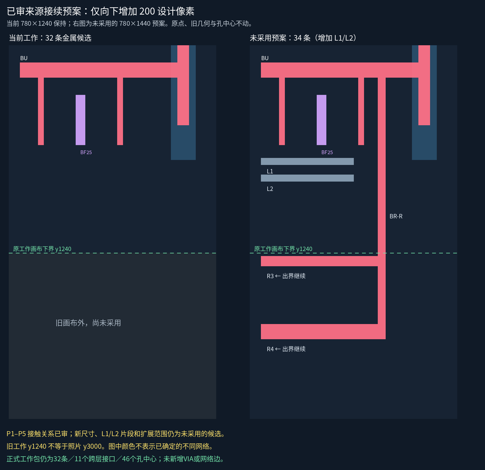
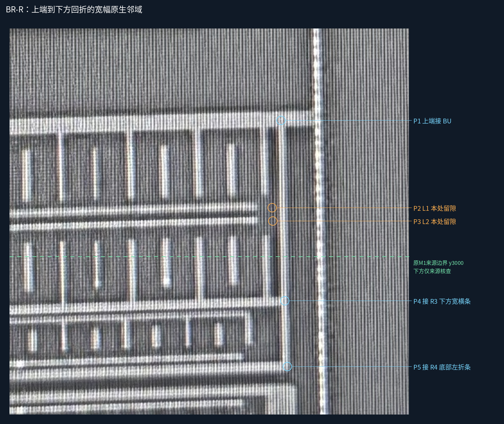
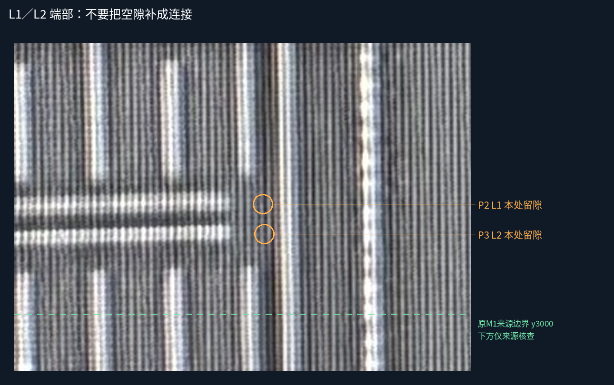
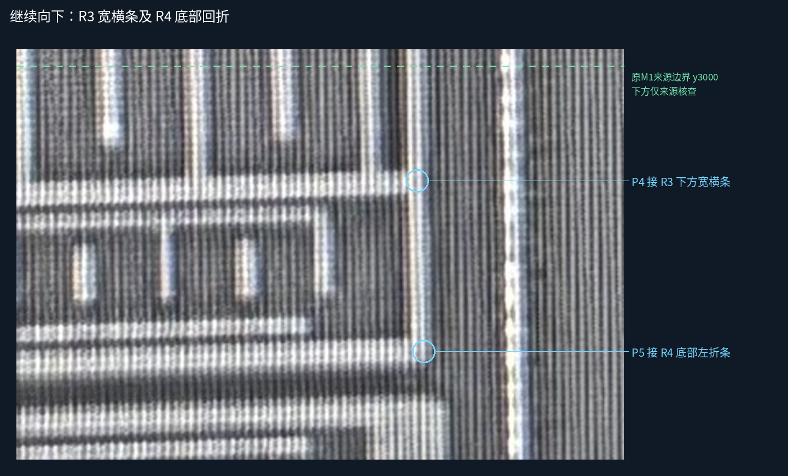

BR-R上接BU，并接下方R3宽横条及R4底部回折；L1/L2在所查端部不直接接BR-R。仅确认这五处本层接触，不推导全局分网、相邻细条或VIA。
原话及范围 · 分阶段下扩预案 · 全层矢量预览（未采用） · 仍有效的工作模型
| 编号 | 目标 | 已审局部关系 | 资格 |
|---|---|---|---|
| P1 | BU | 本处接入 | 来源接触已审；几何未审 |
| P2 | L1-R | 本处不直接接 | 来源接触已审；几何未审 |
| P3 | L2-R | 本处不直接接 | 来源接触已审；几何未审 |
| P4 | BRR-H3070 | 本处接入 | 来源接触已审；几何未审 |
| P5 | BRR-H3175 | 本处接入 | 来源接触已审；几何未审 |
当前工作仍是780×1240、32条金属候选、11个跨层接口、46个孔中心。右侧新预览不是工作包，不能当作已经通过workflow接续或采纳的新层。

预案相对几何、完整既有候选VIA组包围和来源账本检查通过；旧画布放不下这组返回。现有workflow也按预期拒绝直接改父包画布，保留了这一质量门，没有删除父包或另起模型绕过。
没有修改生产代码或启用新画布。预案34条仅用于检查可行性；精确边界、材料/PDK尺寸、返回线左侧出界后的全路径仍未知。
点击图像打开原尺寸。

点击图像打开原尺寸。

点击图像打开原尺寸。

实现并验证S1显式下扩事务，再按S2/S3把候选几何接入；不重问P1–P5或BF24/25/26，不把原图y3000与设计y1240当成同一边界。
PNG已目视检查，静态资源/脚本语法与保持性检查见验证记录；浏览器交互未实测。